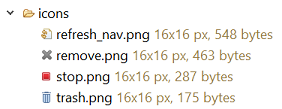

Überblick
Das Icon File Decorator Plugin (kurz Icofidec) hilft dem Entwickler dabei, sich einen
schnelleren Überblick über Icons, die er in seinem Projekt verwendet, zu verschaffen.
Dazu versieht es in den üblichen Eclipse Navigations-Views (z.B. Package Explorer
oder Project Explorer) Knoten, die eine Bilddatei (z.B. "png") repräsentieren, mit
einer entsprechenden Dekoration.
Das Plugin bietet zwei Dekorationsmechanismen an,
- den Icon File Image Decorator und
- den Icon File Information Decorator.
Man kann die Dekoratoren in den Einstellungen separat aktivieren oder deaktivieren sowie
seinen Anforderungen entsprechend konfigurieren.
Ohne Icofidec (oder wenn es deaktiviert ist) stellt Eclipse Bilddateien so dar:
Mit aktiviertem Icofidec so:

Ersetzt im Navigations-View das von Eclipse standardmäßig für die Darstellung von Dateien
verwendete Icon jeweils mit dem in der Datei enthaltenen Icon.
Hängt im Navigations-View an den Dateinamen Informationen zur Größe der Datei an.
Einstellungen
Siehe hier.